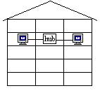
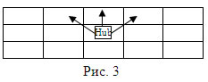
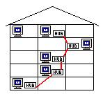

Динамическое программирование: теория
Словосочетание динамическое программирование впервые было использовано в 1940-х годах Р. Беллманом для описания процесса нахождения решения задачи, где ответ на одну задачу может быть получен только после решения задачи, «предшествующей» ей. В 1953 г. он уточнил это определение до современного. Вклад Беллмана в динамическое программирование был увековечен в названии уравнения Беллмана, центрального результата теории динамического программирования, который переформулирует оптимизационную задачу в рекурсивной форме. Слово «программирование» в словосочетании «динамическое программирование» в действительности к традиционному программированию (написанию кода) почти никакого отношения не имеет и происходит от словосочетания «математическое программирование», которое является синонимом слова «оптимизация». Поэтому слово «программа» в данном контексте скорее означает оптимальную последовательность действий для получения решения задачи. К примеру, определенное расписание событий на выставке иногда называют программой. Программа в данном случае понимается как допустимая последовательность событий.
Идея метода динамического программирования состоит в сведении (с помощью рекуррентных соотношений) исходной задачи к
решению некоторых ее подзадач «меньшего размера» и использовании табличной техники для сохранения уже найденных
ответов [2]. Рассказ о методе динамического программирования уместно начинать с легенды о лестнице фараона [12].
Золотую лестницу фараона из девяти ступеней необходимо было модернизировать, уменьшив количество ступеней в лестнице
до четырех и используя небольшое количество золота, имеющееся в казне для наращивания ступеней. Золота было так
мало,
а всех вариантов модернизации так много, что не сносить бы несчастному казначею головы, если бы не его умный
друг-жрец. Жрец, прекрасно владея чудесным методом динамического программирования, сумел за короткий срок, не
рассматривая всех вариантов, найти оптимальное решение и выгадать себе остаток золота из казны фараона.
Разбор задач по данному методу легче воспринимается с самой известной и простой задачи про маршрут [13].
Задача 1. В таблице $A$ размерности $N \times N$ клетки заполнены случайным образом цифрами от 0 до 9. Найти маршрут из левой верхней клетки $A(1, 1)$ в правую нижнюю клетку $A(N, N)$ такой, что:
- он будет состоять из отрезков, соединяющих центры клеток, имеющих общую сторону;
- длина маршрута минимально возможная;
- из всех маршрутов, удовлетворяющих вышеуказанным условиям, искомый маршрут тот, сумма цифр в клетках которого максимальна.
Вывести маршрут как последовательность пар координат клеток, через которые он проходит (первая координата – номер строки, вторая – номер столбца).
Очевидно, что все кратчайшие маршруты идут только сверху вниз и слева направо и длина их $2N-1$. При достаточно большом $N$ таких маршрутов огромное количество, что полным перебором решить данную задачу практически невозможно.
Итак, рассмотрим аналогичную задачу для всевозможных прямоугольных подтаблиц размеров $(N-I+1) \times (N-J+1)$
исходной таблицы (при $I, J = 1, 2, ...$) и построим вспомогательную таблицу $B$ размером $N \times N$ с суммой
цифр, через которые проходит оптимальный путь в такой таблице.
Построение вспомогательной таблицы $B$ необходимо начать с конца таблицы $A$, что приведет к следующим формулам
(рис. 1):
- $B(N, N) = A(N, N)$
последняя клетка обязательно входит в маршрут - $B(N, J) = B(N,J+1) + A (N, J)$ при $J = N-1, N-2, ... , 1$
если маршрут вышел в последнюю строку таблицы, то он обязательно будет проходить до конца по последней строке, так как он кратчайший - $B(I, N) = B(I+1, N) + A (I, N)$ при $I = N-1, N-2, ..., 1$
если маршрут вышел в последний столбец таблицы, то он обязательно будет проходить до конца по последнему столбцу - $B(I, J) = max (B(I+1, J), B(I, J+1)) + A (I, J)$ при $I<N$ и $J<N$
внутри таблицы в маршрут будет входить та клетка из последующего столбца или последующей строки, в которой сумма цифр больше
Оптимальный маршрут легко получить, двигаясь по полученной вспомогательной таблице из левого верхнего в правый нижний угол и выбирая направление в сторону той клетки, где записано большее число.
Программа .1:
RANDOMIZE TIMER
CLS
INPUT "Введите размерность N: "; n
DIM a(n, n), b(n, n)
FOR i = 1 TO n
FOR j = 1 TO n
a(i, j) = INT(RND * 10)
PRINT a(i, j);
NEXT j
PRINT
NEXT i
'Формирование дополнительной матрицы
b(n, n) = a(n, n)
FOR i = n - 1 TO 1 STEP -1
b(i, n) = b(i + 1, n) + a(i, n)
b(n, i) = b(n, i + 1) + a(n, i)
NEXT i
FOR i = n - 1 TO 1 STEP -1
FOR j = n - 1 TO 1 STEP -1
b(i, j) = max(b(i + 1, j), b(i, j + 1)) + a(i, j)
NEXT j, i
PRINT
PRINT "Сумма чисел на всем кратчайшем пути = "; b(1, 1)
'Путь ищется обратным проходом
PRINT "( 1; 1)";
i = 1: j = 1
WHILE (i <> n) OR (j <> n)
IF i = n THEN 'Если дошли до нижней границы
j = j + 1
ELSE
IF j = n THEN 'Если дошли до правой границы
i = i + 1
ELSE
IF b(i + 1, j) > b(i, j + 1) THEN i = i + 1 ELSE j = j + 1
END IF
END IF
PRINT USING " - (##;##)"; i; j;
WEND
FUNCTION max (a, b)
IF a > b THEN max = a ELSE max = b
END FUNCTION
Задача 2. «Акирема». (Областная олимпиада 1998).
В государстве Акирема алфавит состоит из букв американского языка. Каждый акиремец (житель) имеет право пополнить
словарь своего языка новым словом.
Слово формируется по следующим правилам:
- Предлагается N известных слов (длина каждого слова не превосходит M);
- Слова выписываются друг под другом с выравниванием по левому краю;
- Из каждого слова выбирается по одной букве непрерывной цепочкой, т.е. буквы должны граничить друг с другом по вертикали или по диагонали;
- Полученное таким образом слово длины N должно иметь максимальную сумму кодов ASCII каждой буквы.
Какое новое слово может сформировать акиремец по предложенным словам.
Примечание. Данные вводятся из файла с именем INPUT.TXT. В файле они заданы так: числа N и M – на первой
строке через разделитель, каждое слово задаётся с новой строки.
Вывод осуществляется на экран или в файл с именем OUTPUT.TXT.
Пример: из слов
A P P L E
W I N D O W S
M O U S E
B Y T E
должно получиться слово PWOY.
Указание. Задача легко сводится к предыдущей. Строится матрица A размера NxM, где N – количество слов, а M – количество букв в самом длинном слове (табл. 1). Массив первоначально заполняется кодами ASCII букв каждого слова, расположенного в матрице по строкам с выравниванием по левой стороне (для коротких слов в матрице на местах отсутствия букв проставляются нули).
Таблица 1
65 |
80 |
80 |
76 |
69 |
0 |
0 |
87 |
73 |
78 |
68 |
79 |
87 |
83 |
77 |
79 |
85 |
83 |
69 |
0 |
0 |
66 |
89 |
84 |
69 |
0 |
0 |
0 |
Затем массив преобразуется по следующему правилу (табл. 2):
- последняя строка в матрице остается без изменений;
- начиная с предпоследней строки и до первой, числа в матрице заменяются так:
- A (I, J) = max (A (I-1, J), A (I-1, J+1)) + A (I, J) при I = N-1, N-2, …, 1 и J = 1
- A (I, J) = max (A (I-1, J), A (I-1, J-1)) + A (I, J) при I = N-1, N-2, …, 1 и J = M
- A (I, J) = max (A (I-1, J-1), A (I-1, J), A (I-1, J+1)) + A (I, J) при I = N-1, …, 1 и J = 2, 3, …, M-1.
Таблица 2
320 |
335 |
332 |
328 |
315 |
0 |
0 |
255 |
247 |
252 |
242 |
246 |
225 |
83 |
166 |
168 |
174 |
167 |
138 |
0 |
0 |
66 |
89 |
84 |
69 |
0 |
0 |
0 |
В первой строке матрицы ищется наибольший элемент – это и есть искомая максимальная сумма кодов ASCII. Обратным ходом, выбирая всегда наибольшее значение, необходимо двигаться сверху вниз (с первой строки до последней), составляя строку из соответствующих букв. Искомое слово найдено - PWOY.
Программа 2:
DEFINT A-Z
OPEN "input.txt" FOR INPUT AS #1
INPUT #1, n, m
DIM Word$(1 TO n), Marks(0 TO n, 0 TO m + 1)
FOR i = 1 TO n
INPUT #1, Word$(i)
FOR j = 1 TO LEN(Word$(i))
Marks(i, j) = ASC(MID$(Word$(i), j, 1)) + max(Marks(i - 1, j - 1), _
Marks(i - 1, j), Marks(i - 1, j + 1))
NEXT
NEXT
k = 1
FOR i = 2 TO LEN(Word$(n))
IF Marks(n, i) > Marks(n, k) THEN k = i
NEXT
FOR i = n TO 1 STEP -1
s$ = MID$(Word$(i), k, 1) + s$
IF Marks(i - 1, k - 1) > Marks(i - 1, k + 1) THEN k = k - 1
IF Marks(i - 1, k + 1) > Marks(i - 1, k) THEN k = k + 1
NEXT
PRINT s$
FUNCTION max (a, b, c)
IF a > b THEN
IF a > c THEN max = a ELSE max = c
ELSE
IF b > c THEN max = b ELSE max = c
END IF
END FUNCTION
Задача 3. «INTERNETомания». (Районная олимпиада 1999)
Компания
«Питерские
сети» проводит подключение к сети INTERNET N-этажных домов. На каждом этаже компьютеры подключаются к концентратору
(HUB) по топологии «звезда», т.е. каждый компьютер соединяется с концентратором отдельным кабелем (рис. 2).
Количество квартир на каждом этаже равно K (для упрощения предполагается, что квартиры расположены на одной прямой,
и
нумерация квартир идет слева направо). Расстояние между соседними квартирами и этажами одинаково. Схема дома
представлена в виде прямоугольной таблицы, строки которой – этажи, а столбцы – квартиры. Квартиры, имеющие
компьютер,
обозначаются 1 (единицей), а остальные 0 (нулями). Переход с одного этажа на другой возможен только в ближайшие
квартиры (рис. 3).

Требуется написать программу, которая выведет номера квартир, начиная с первого этажа, в которых должны быть расположены HUB’ы, при условии, что общая длина кабеля, соединяющего все компьютеры в сети, минимальна.
Примечание. Концентраторы (HUB) могут располагаться и в тех квартирах, где нет компьютеров.
Формат входных данных:
Входные данные расположены в текстовом файле с именем INPUT.TXT в следующем порядке:
- первая строка содержит числа N (≤ 14) и K (≤ 8);
- последующие строки – это строки таблицы, состоящей из нулей и единиц и изображающей схему дома с компьютерами.
Формат выходных данных:
Результат работы программы выводится в файл OUTPUT.TXT и представляет собой последовательность номеров квартир,
начиная с первого этажа, в которых должны располагаться концентраторы HUB.
Пример файла INPUT.TXT (рис. 4):
5 3
1 1 0 {5-й этаж}
0 0 1 {4-й этаж}
1 1 1 {3-й этаж}
0 1 0 {2-й этаж}
1 0 0 {1-й этаж}
1 5 8 12 14